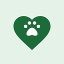
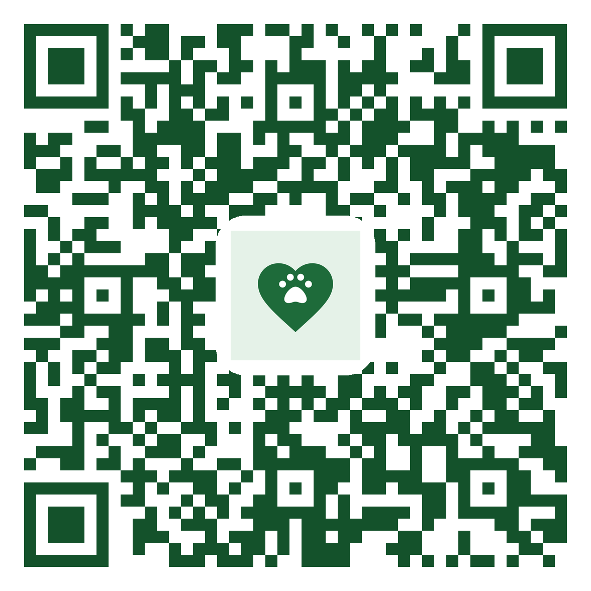
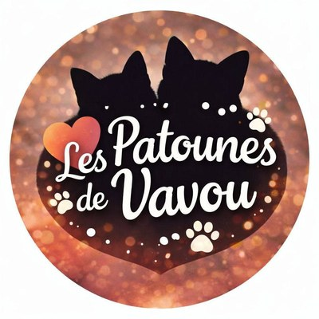
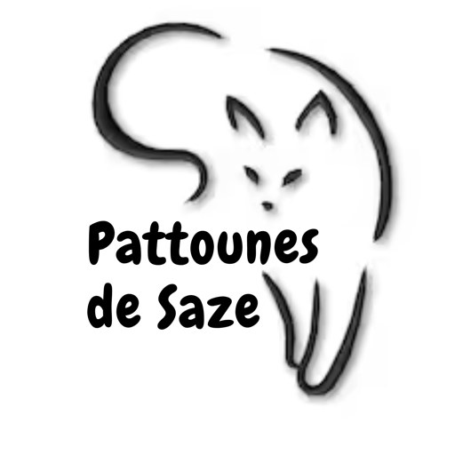

AnimAideSignalez-le en quelques secondes et prévenez les personnes et les associations autour de vous. Gratuite, sans publicité, faite pour les animaux.

Scannez pour télécharger · Android
Animal perdu, trouvé, blessé, abandonné ou maltraité : photo, position sur la carte, et c'est publié.
Soyez prévenu d'un nouveau signalement dans le rayon que vous choisissez.
L'appli rapproche automatiquement les animaux perdus et trouvés qui se ressemblent.
Sous chaque annonce, donnez des nouvelles : « Je l'ai vu près de l'école ».
Proposez un transport, un accueil temporaire ou du matériel.
Donnez ou trouvez nourriture, couvertures et matériel près de chez vous.


Vous êtes une association de protection animale ? Faites votre demande dans l'appli : Plus → Associations partenaires.
AnimAide est développée de façon indépendante et restera gratuite et sans publicité. Votre soutien aide à couvrir les frais :
Vous pouvez aussi nous aider gratuitement : laissez un avis ⭐ sur Google Play et partagez l'appli autour de vous.